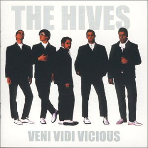
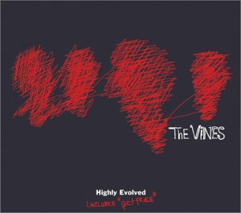
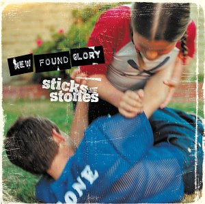
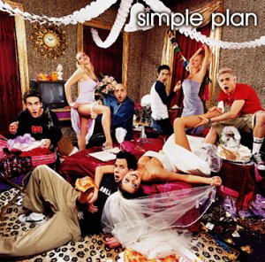
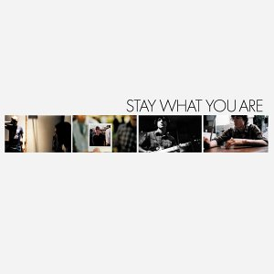
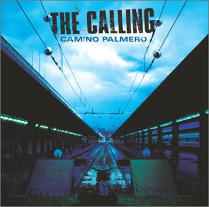
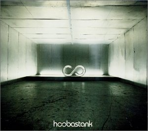
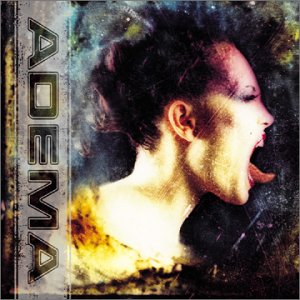
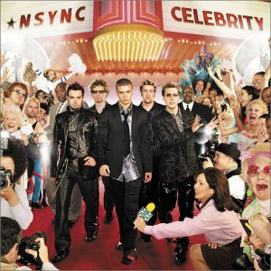
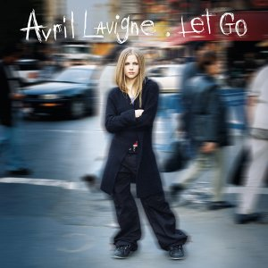

These are The Hives. They sound like a 60's or 70's punk band. (Garage punk)

The Vines are similiar to the Hives, but not exactly. (General Rock)

New Found Glory is a more modern punk band. ( Hardcore & Punk/Emo)

Simple Plan is similiar to NFG. They're also a modern punk band. (Punk/Punk Revival)

Saves The Day has a less punk sound. They're more like emo/punk. They sing about crazy stuff from love to burying your best friend. (Punk Pop/Emo)

The Calling isn't really a punk band. Their sound is more of a pop rock style. (Pop Metal)

Hoobastank is not a punk band. They're more like a general rock band. (General/Hard Rock)

Adema is far from punk music. Their sound is more hard rock. (Hard Rock)

Yes, I will admit I do like Nsync. You guys know who they are. (Teen Pop)

Her songs are pretty cool even though they sound more pop than punk. (General Pop)